Introdução à simulação deCloth (roupa, tecidos)
Introdução
1- Comece uma nova cena no Blender, limpe o cubo que surge automaticamente (X). Adicione uma UV Sphere e aplique-lhe um Smooth para esta ficar mais arredondada.
2- Adicione um plano, duplique o seu tamanho (S > 2) e coloque-o acima da esfera, como na imagem. Para controlar melhor a deslocação do plano, clique em CTRL enquanto clica no widget para deslocar em Z (seta azul). Utilize a ferramenta Subdivide mas insira 10 cortes para obter mais vértices. Quantos mais vértices, mais exacta/correcta será a simulação e mais tempo demorará a simulação...
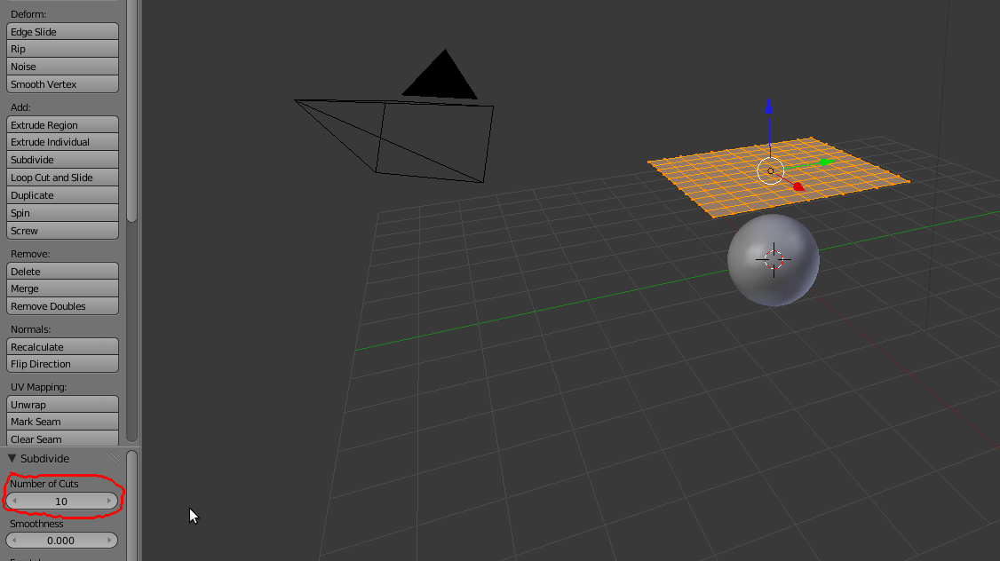3- Aplique um Subdivision Surface ao plano e faça Apply ao modifier. Aplique um Smooth.
4- Em Edit Mode, seleccione todos os vértices e faça Unwrap (U).Na janela de UV/Image Editor, clique em New e depois active a opção UV Test Grid.
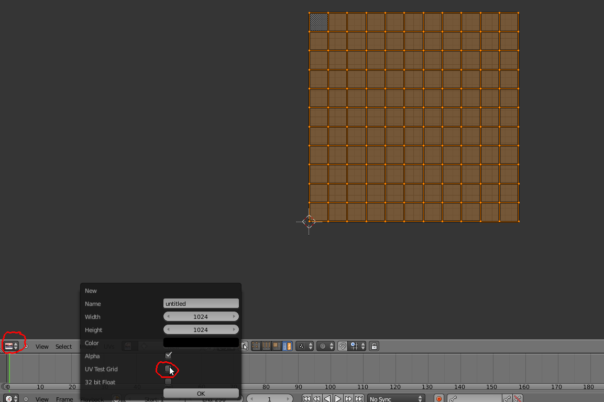5- Na janela 3D View, no painel de propriedades (N), active a opção Texture Solid para ver na janela 3D a textura de testes.

Para renderizar com esta textura, aplique um material ao plano. Depois, adicione uma textura e active as opções da imagem.
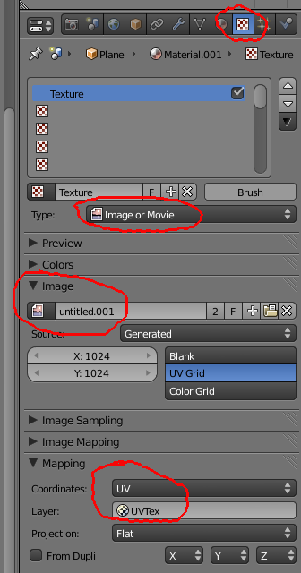Atenção: neste caso, não necessita de importar uma imagem externa ao Blender. Basta clicar no ícone à esquerda do nome da imagem para surgir uma lista com as imagens actualmente existentes e escolher a imagem que corresponde à grelha.
7- Seleccione a esfera e, no painel Physics, adicione uma simulação Collision.
8- Seleccione o plano e, no painel Physics, adicione uma simulação Cloth. Escolha um preset e faça Alt+A para ver o resultado. Experimente os outros presets (Cotton = algodão; Denim = ganga; Leather = cabedal; Rubber = borracha; Silk = seda).
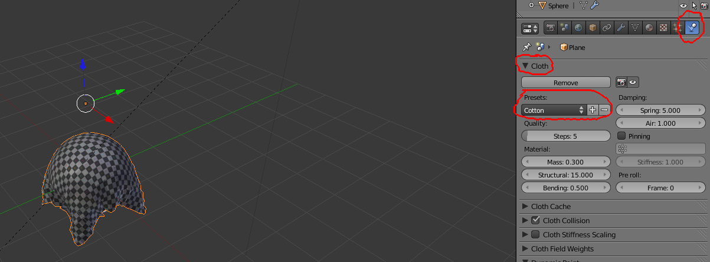[Se quiser tornar definitiva ou permanente a forma obtida numa frame, vá ao painel de Modifiers e clique em Apply para o modifier Cloth.]
Algumas configurações
Steps: qualidade global; mais steps = mais qualidade = simulação mais demorada
Mass e Air: o valor da massa do objeto define o peso da roupa (maior massa = mais peso). Este parâmetro não afeta a velocidade (como a imagem abaixo poderia sugerir...). Na imagem abaixo, existe uma diferença de velocidade por causa do valor do Air que define a fricção do ar. Os objetos caem com a mesma velocidade mesmo que tenham valores diferentes de Massa (Terceira Lei de Newton: A toda ação há sempre uma reação oposta e de igual intensidade).
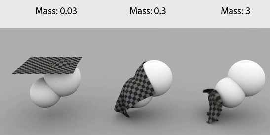Pequena nota sobre Física: “Na física, massa e peso são propriedades diferentes. A massa é uma medida da inércia de um corpo, uma grandeza escalar que mede a oposição que um corpo apresenta a mudanças em sua velocidade quando observado a partir de um referencial inercial, enquanto o peso, uma grandeza vetorial é a força resultante da interação gravitacional entre este corpo e algum outro em sua vizinhança. Assim, o peso depende das massas dos corpos envolvidos na interação gravitacional bem como da distância que os separa, mas os conceitos de peso e massa são bem distintos.”1
Structural (Stiffness): Define a rigidez da forma, valores baixos atribuem maior elasticidade, valores altos conferem maior rigidez.
Imagens foram retiradas de "Blender Cloth Simulator Tutorial" de Daniel Kreuter, disponível em http://www.youtube.com/watch?v=k4czh0x31xk
http://pt.wikipedia.org/wiki/Diferen%C3%A7as_entre_massa_e_peso
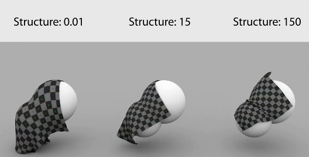Bending: define valor das rugas/dobras do tecido, seda tem valores menos elevados e cabedal tem valores mais altos.

Damping: valores que afetam a velocidade da simulação, amortecimento da velocidade do cloth e “espessura” (resistência) do ar
Pinning: permite definir parte do objeto (grupo de vértices) que não colide ou só colide parcialmente.
Pre roll: frame em que começa a simulação
Cloth Collision > Distance: especifica o espaço entre a cloth e outros objetos. Valores muito baixos podem originar problemas, os valores pré-definidos são suficientes para a maioria das situações.
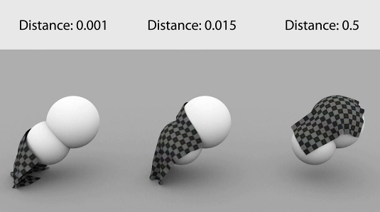Cloth Collision > Friction: especifica o grau de fricção entre a cloth e os restantes objetos.
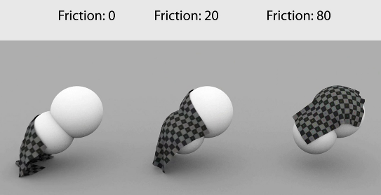3 possibilidades úteis
1 Pinning
Em Edit Mode, selecione uma linha de vértices. No painel Object Data, crie um grupo de vértices com o nome “varao” e clique Assign para associar os vértices selecionado ao grupo criado. Vamos manter o peso máximo 1.000 mas pode criar associações com pesos variados para cada vértice... Pode utilizar o botão Remove para remover vértices do grupo.
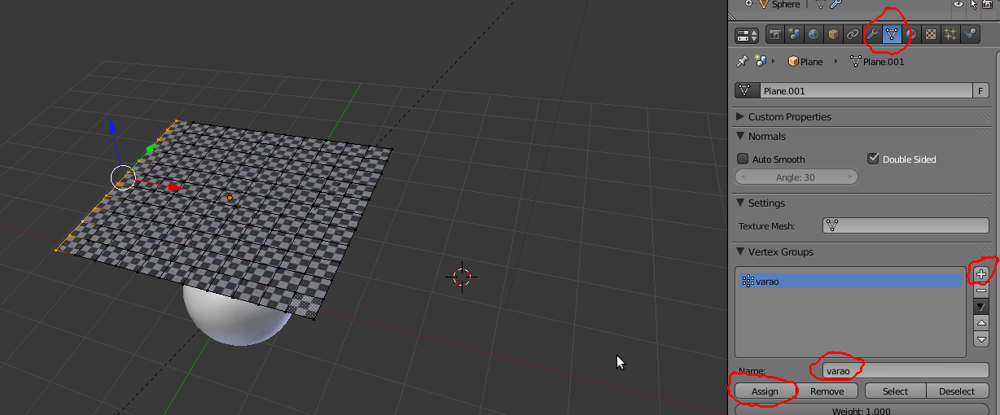No painel Physics, ative a opção Pinning e escolha o grupo “varao”. Faça Alt+A para ver o resultado.
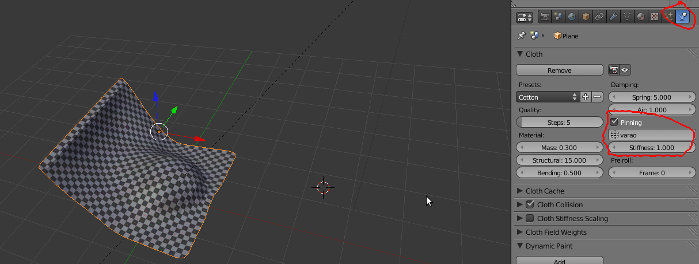Experimente uma simulação com um Weight diferente (por exemplo, 0.5) no Vertex Group.
Experimente uma simulação com outros vértices (por exemplo, os 4 cantos) no Vertex Group.
2 Objetos animados
Anime a esfera com keyframes de modo a esta colidir com o pano. Faça Alt+A para ver o resultado.
Neste caso, pode ser especialmente útil ativar no Cloth Collision a opção Self Collision para que o pano possa calcular e simular a colisão consigo mesmo. Se não ativar, o pano apenas colide com os objetos que tenham o Collision.
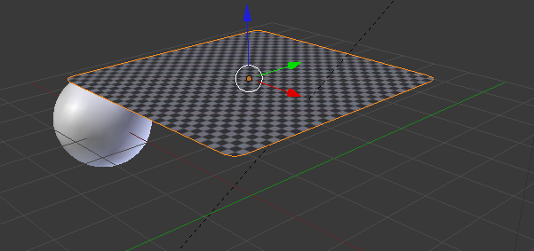 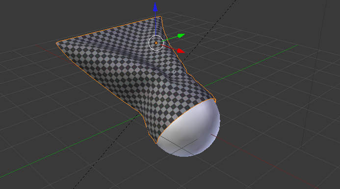 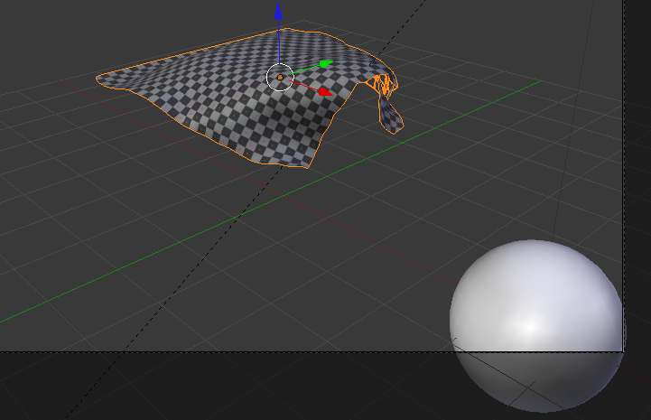3 Wind (Vento)
Mude a esfera para outro layer.
Adicione um objeto Wind (Add > Force Field > Wind)
Reposicione o Wind e configure de acordo com a imagem abaixo.
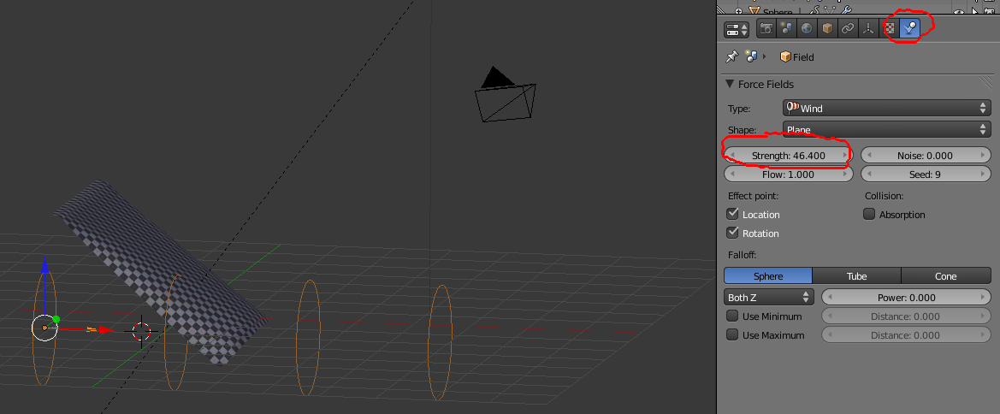Algumas configurações:
- Strength: força do vento
- Noise: grau de “ruído” para criar vento com força não constante
- Collision Absorption: para calcular colisão com objetos que estejam no caminho do vento.